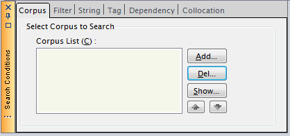
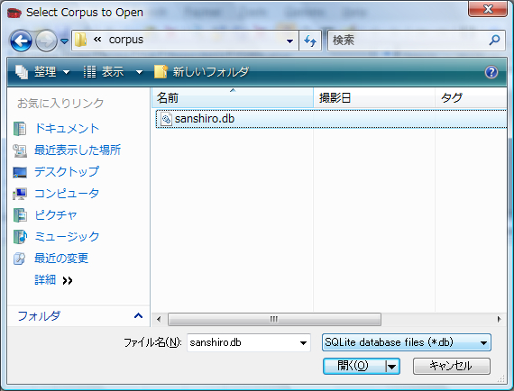
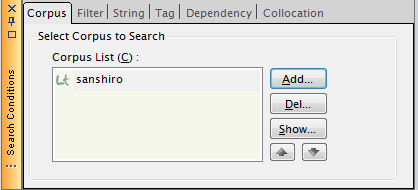
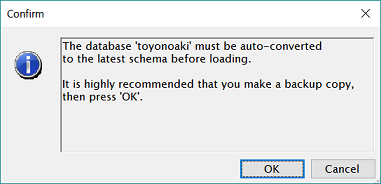
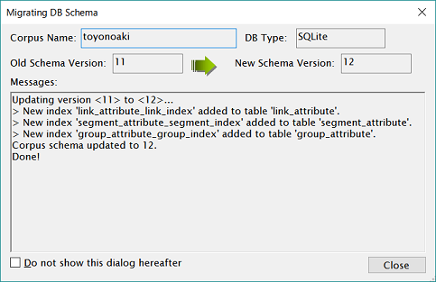
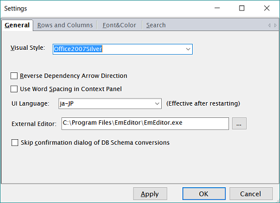

コーパスの選択
コーパスソースがインポートできて、データベースが作成されたら、次はそのデータベースを 操作対象として選択します。これは、条件パネルにある"Corpus"タブから行います。

Corpusタブにおいて、"Add"ボタンを押します。次のファイル選択ダイアログが表示されます。

SQLiteの場合は、通常のファイルを開く場合と同様に、作成されているデータベースファイルを 選択します（ここでは、sanshiro.dbを選択しています）。
※MySQLの場合は、ファイルの種類を選択するリストボックスで"Corpus definition files(.def)"を 選択し、データベースのdefファイルを選択します。
"開く"ボタンを押すと、Corpusタブのリストボックスに選択したデータベースが追加されます。 （データベースの種別に応じたインジケータアイコンが左側に表示されています。）

この操作を繰り返すことで、複数のコーパスを選択することも可能です。 複数のコーパスを選択した場合、矢印ボタンにより検索順序を変更することができます。
選択したコーパスを選択解除するには、解除したいコーパスをリストボックスで選択した状態で "Del"ボタンを押します。（コーパス自体が削除されるわけではありません。）
コーパスのバージョン変換
コーパスを選択した際に、下記のようなメッセージが表示される場合があります。これは、ChaKiの現在のバージョンと 選択したデータベースのバージョン（「スキーマバージョン」と呼びます）が不一致の場合に表示されるものです。

OKをクリックすると、データベースは自動変換され、最新のバージョンにアップグレードされます。念のために クリックして続行する前にデータベースのバックアップを取ることをお勧めします。

自動変換の過程は上のダイアログに表示されます。エラーなく変換されたことを"Messages"欄で確認したら、 "Close"をクリックします。正常に変換されていれば、コーパス一覧に変換されたコーパスが追加されているはずです。
大量のデータベースに対して変換が必要な場合には、この確認プロセスを省略することができます。 ダイアログを閉じる前に "Do not show this dialog hereafter" をチェックすれば、今後、確認メッセージは出ず、 自動的に変換処理が実行されます。
なお、自動実行を行うか否かの設定は、"オプション"-"設定"で表示できる"Settings"ダイアログからも変更可能です。

"General"タブの"Skip confirmation dialog of DB Schema conversions" が上のチェックボックスと全く同じ働きをします。